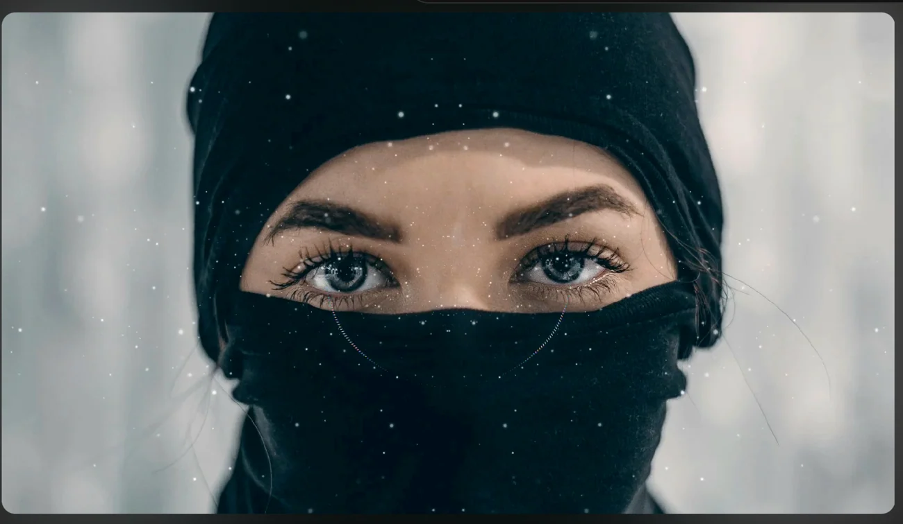
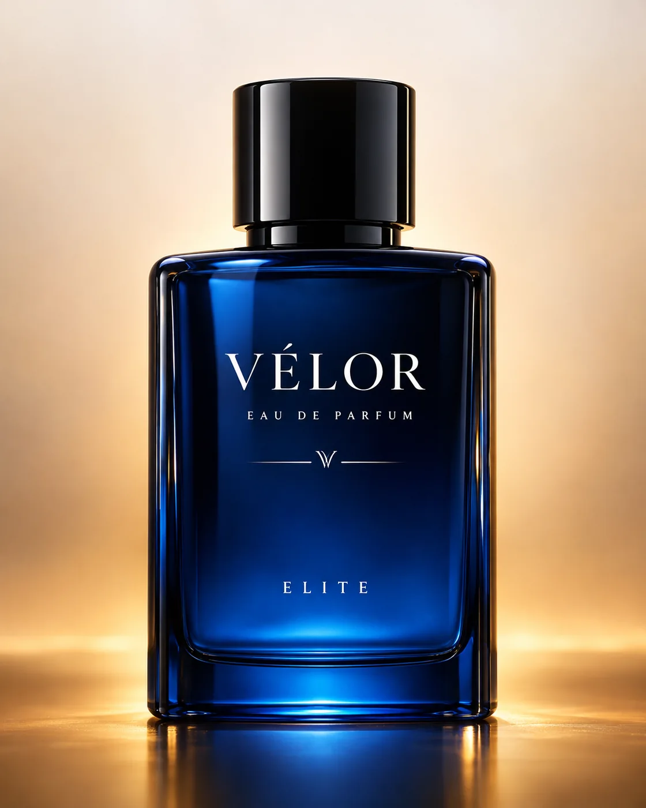

VISUALS.STORIES.SYSTEMS.
I create AI-generated visuals and cinematic video for fashion, beauty and product brands — supported by a background in software engineering, automation and digital product development.

AI VISUAL
ARTIST &
VIDEO
CREATOR.
I develop image and video campaigns for fashion, beauty and product brands — from art-directed stills to short cinematic edits. Currently expanding my creative portfolio, developing repeatable workflows and refining craft through active experimentation.


VISUAL FIRST.
ENGINEERING DEPTH.
My current focus is AI imagery and cinematic brand content. A parallel engineering practice gives me the technical foundation to build complete digital experiences and production workflows.
[ 02 / SPOTLIGHT ]
SELECTED WORK.
Project narratives currently available in English.
[ 03 / PROJECT INDEX ]
THE FULL ARCHIVE.
A searchable record of engineering, frontend, visual direction, strategy, media and learning. Select any card to explore the actual scope.
Try another discipline or keyword.
[ 04 / LINKED WORLDS ]
MORE THAN ONE WEBSITE.
EXPERIENCES WITH THEIR OWN IDENTITY
Each linked world retains its own art direction. Existing designs are shown as independent projects, not forcibly reskinned to match the portfolio shell. Links are owner-provided; verify individual live deployments before publishing.
[ 05 / BEYOND THE BRIEF ]
EXPERIMENTS, LEARNING & STARTUPS.
NOT ALL MEANINGFUL WORK IS CLIENT WORK
A psychiatric documentation concept, 14-slide pitch, independent product website and a startup application that was not accepted.
READ THE STORY ↗ ANALYTICS / LEARNINGALLEGRO CHALLENGEAn analytical take-home exercise completed with explicit AI assistance.
EXPLORE THE NUMBERS ↗ CONTINUING EDUCATION / OCT 2026LEARNING ACROSS FIELDSCertificate of attendance in advanced approaches to trauma treatment in psychotherapy. Not a clinical credential.
VIEW CERTIFICATE ↗I WORK BETWEEN
THE DISCIPLINES.
Today I focus on AI art direction and cinematic content. My engineering, frontend, automation, education and product work is the foundation that helps me translate creative ideas into practical deliverables.
30.52° E
BASED IN KYIV / WORK WORLDWIDE
[ 06 / LET'S TALK ]
HAVE SOMETHING
AMBITIOUS?
Calendly scheduling URL is not yet provided — please email to arrange a meeting.